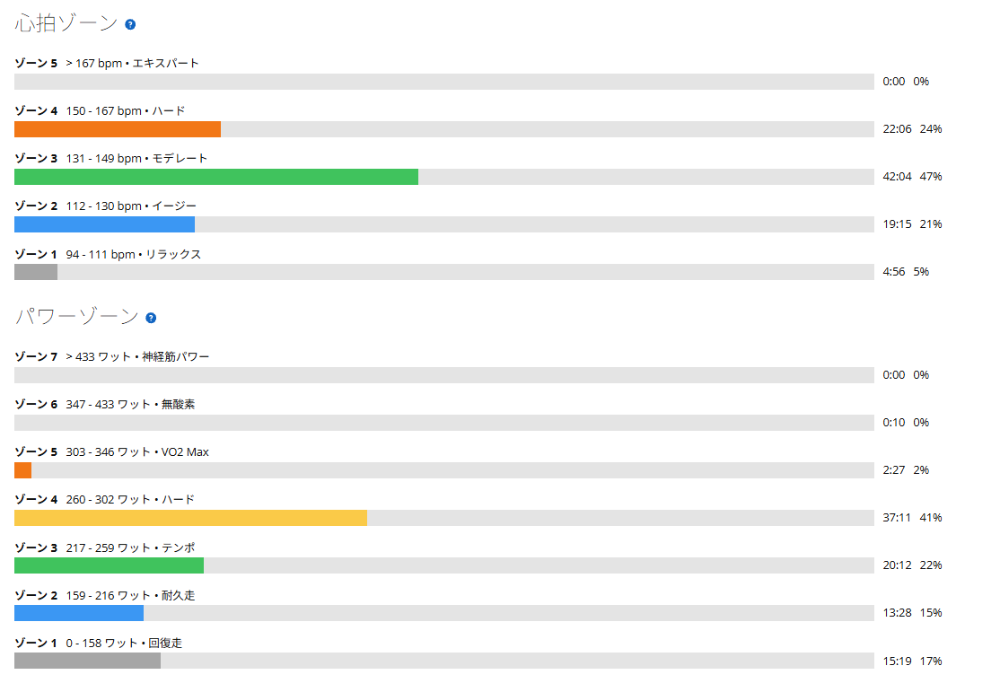

SSTの中に高トルク区間を入れてみた。古峰ヶ原の辛い区間が少し脳裏をよぎった
今日はローラーでSST。ただし、いつものSSTと少し違うことを試した。狙いは、古峰ヶ原の後半みたいに勾配がきつくなって、一時的にケイデンスが落ちる場面への対応。ずっと低ケイデンスではなく、SSTに短い高トルク区間を差し込む形である。

約46km・NP247W・TSS107
- 全体46.44km / 1時間28分50秒 / 平均気温23.8℃ / 運動量1,217kJ
- 負荷平均228W / NP247W / IF0.853 / TSS107.2 / 20分最大277W / FTP設定289W
- 心拍・回転平均139bpm / 最大162bpm / 平均82rpm
- 1本目20分 / 277W / 心拍平均145bpm・最大156bpm / 82rpm
- 2本目20分 / 274W / 心拍平均153bpm・最大162bpm / 81rpm
- 3本目20分 / 242W / 心拍平均143bpm・最大148bpm / 82rpm
レストは各5分。3本目だけ出力が低いのは後ほど。
予告とは少し形を変えた
古峰ヶ原の記事では、高トルク練習を「75rpm前後・250〜260W・5分×3〜4本」から始めると書いた。今日はそれとは少し違って、SSTの中に高トルク区間を差し込む形にした。基本は普通のSSTのケイデンス。そこから、たまにギアを重くして、一時的に75〜79rpmくらいまで落とす。目安は77rpm前後で、長くても1分半くらい。重いギアで少し踏んで、また軽いギアに戻して、タイミングを見てまた重くする。その繰り返しである。
なので、今日のSSTを「低ケイデンスSST」と呼ぶのは少し違う。平均ケイデンスは82・81・82rpmで、20分ずっと70rpm台で踏んでいたわけではない。古峰ヶ原も、ずっと同じ勾配ではない。緩いところがあって、急になるところがあって、また少し楽になる。そう考えると、こっちの方がむしろ実戦的かもしれない。
FTP289W基準で277W
1本目は277Wで、FTP289Wに対して約96％。閾値寄りの強度である。FTP275Wで見ていた頃のSSTは、9月24日の3本目273Wが最高、10月17日が263W・268Wだった。数字だけなら上がっているが、基準を289Wに変えたばかりなので、単純な比較はしないでおく。

2本目で、古峰ヶ原がよぎった
今日いちばん印象に残ったのは2本目だった。出力は274Wで、1本目とほぼ同じ。でも、疲労が溜まってきたところで重いギアを入れると、腰まわりにじわじわ疲れが出てきた。そして途中で、この前の古峰ヶ原の後半が脳裏をよぎる。
あのときも、後半の急勾配でインナーローまで使って、それでもギリギリ。腰が疲れて、思うように踏み込めなくなってくる。今日のローラーでも、それに少し近い感覚が出た。もちろん、実走の激坂とローラーは同じではない。でも「あ、この感じはこの前あったな」と思えた時点で、今回の練習はかなり狙いに近かったと思う。
3本目は、わざと落とした
3本目は242Wまで軽くした。単純に脚が終わって続けられなかったからではない。今回は、高トルクの刺激を初めてSSTに混ぜている。そして、一番気になっていたのが膝。2本目までで、古峰ヶ原に近い疲労感まで出てきた。そこで3本目まで同じように無理をして、膝を痛めたら意味がない。調子がいいときが一番危ない！今日はここまでで十分と判断して、意図的に落とした。
しばらくこの形で、20分×3本を目指す
今回の内容はかなり良かったので、しばらくこの形を続けてみる。当面の目標は、このSSTを20分×3本、最後まで大きく崩さず完遂すること。ただし、毎回低ケイデンス区間を増やしていくつもりはない。まずは今くらいの短い高トルク区間を入れながら、3本目までSSTとして成立させる。それができるようになったら、少しずつ出力や高トルク区間の入れ方を考える。古峰ヶ原の35×33でギリギリだった分、急勾配への対応力はもう少し欲しい。でも、そのために膝を壊したら本末転倒である。今日は高トルク区間を短く区切ったので、合計の低回転時間は長くない。刺激は入れつつ、ずっと重く踏み続ける形にはしていない。このくらいのバランスで、膝の様子を見ながら続けていきたい。
実走とつながる練習になった
2本目で古峰ヶ原の辛い区間が一瞬よぎるくらい、実走とつながった。伸ばしたいところも見えた。良い練習だった。